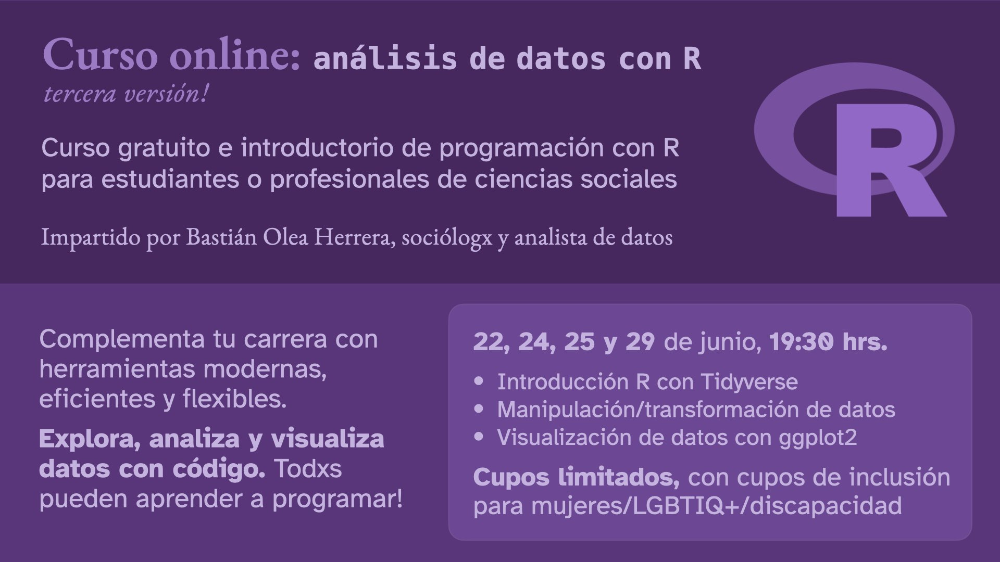

Curso: introducción al análisis de datos con R, 3ª versión
Curso online de programación dirigido a estudiantes o profesionales de las ciencias sociales
Resumen
Tercera versión del curso gratuito de introducción a R enfocado en las ciencias sociales. En este curso de cuatro sesiones aprenderemos a usar R para trabajar con datos sociales, revisando lo básico de la visualización de datos con R.

Sobre el curso
Tercer curso gratuito de introducción al análisis de datos con R, enfocado en las ciencias sociales.
En este curso de cuatro sesiones aprenderemos a usar R para analizar datos sociales, también revisando lo básico de la visualización de datos con R.
El curso va dirigido a profesionales o estudiantes de las ciencias sociales que no tengan ninguna experiencia programando ni usando R.
| Características | |
|---|---|
| Duración | 4 sesiones |
| Tiempo por clase | 2 horas |
| Horas totales | 8 horas cronológicas |
| Certificación | Ninguna, queremos aprender |
R es un lenguaje diseñado para trabajar con datos. Además de exploración, transformación y análisis de datos, R permite hacer visualizaciones, mapas, automatización de procesos, reportes, aplicaciones web, y mucho más.
Su gracia es que es un lenguaje usado por personas de diversas disciplinas, y por lo mismo está pensado para ser amigable a personas que no sean expertas en informática ni ciencias de la computación. Además tiene una comunidad amplia y diversa de usuari@s!
Aprende desde cero a usar este lenguaje y complementa tu carrera con herramientas de programación que te abrirán muchas posibilidades.
Inscripciones
Inscripciones cerradas! Gracias a las más de 400 personas que se inscribieron!
El curso contará con 160 cupos, los cuales se asignarán por orden de inscripción y priorizando según criterios de inclusión para la participación de grupos minoritarios (mujeres, disidencias de sexo y género, personas con discapacidad).
Los criterios de inclusión se resumen (no exhaustivamente) a continuación:
| Criterios | Prioridad | |
|---|---|---|
| Género | Mujeres y personas no binarias | +2 |
| Personas trans | Hombres o mujeres transgénero | +100 |
| Orientación | Gays, Lesbianas, Bi, Pan, etc. | +2 |
| Discapacidad | Personas con credencial de discapacidad | +2 |
| Territorio | Personas que vivan en Chile | +3 |
Cada alumn@ debe comprometerse a asistir a todas las clases, ya que su cupo implica que otra persona se quede fuera!
Composición del curso
Se asignaron 163 cupos a personas que postularon al curso. Los siguientes gráficos resumen la composición del curso:


En estos gráficos se puede observar el efecto de la aplicación de criterios de inclusión para aumentar el porcentaje de cupos asignados a grupos minoritarios, en comparación con el porcentaje original de personas postulantes.
Ver más gráficos
En este gráfico podemos ver las áreas o disciplinas de donde vienen las y los estudiantes:

En el siguiente gráfico vemos los países de donde provienen:

Docente

Bastián Olea Herrera es sociólogx y magíster en Sociología de la Universidad Católica de Chile. Se ha dedicado por más de 5 años al análisis de datos con R. Se desempeña al análisis de datos sociales en el Gobierno de Chile. Su experiencia consiste principalmente en visualización de datos y desarrollo de aplicaciones interactivas con R. También se dedica a escribir tutoriales para ayudar a otr@s a aprender R.
Clases
Las clases se realizan en línea mediante la plataforma Zoom. Las personas que obtengan un cupo recibirán un enlace privado de acceso.
Cualquier persona podrá ver las grabaciones de las clases por Youtube.
Las clases, incluyendo apuntes y diapositivas, se iran subiendo a esta página en la medida que se realizan.
Calendarización
| Clase | Tema | Fecha | Hora |
|---|---|---|---|
| Clase 1 | Introducción a R | 22 de junio, 2026 | 19:30 hrs. |
| Clase 2 | Manipulación de datos con {dplyr} |
24 de junio, 2026 | 19:30 hrs. |
| Clase 3 | Resumir datos, cruces, transformar datos | 25 de junio, 2026 | 19:30 hrs. |
| Clase 4 | Visualización de datos con {ggplot2} |
29 de junio, 2026 | 19:30 hrs. |
Todos los horarios son en hora de Chile continental (GMT-4).
Diapositivas
En las diapositivas del curso se resumen los temas, se muestran ejemplos de código, y se entregan enlaces para descargar los datos necesarios. También cada temática va acompañada de un tutorial para profundizar.
También puedes descargar las diapositivas en el siguiente enlace:
Grabaciones
A continuación comparto las grabaciones de las clases! Puedes verlas todas en mi canal de Youtube.
Clase 1: Introducción a R
22 de junio, 2026
Clase 2: exploración de datos con {dplyr}
24 de junio, 2026
Clase 3: manipulación de datos con {dplyr}, resúmenes y cruces
25 de junio, 2026
Clase 4: transformación de con {tidyr}, visualización de datos con {ggplot2}
29 de junio, 2026
Código
En el repositorio del curso, en la carpeta clases, encontrarás los scripts que revisamos en clases, con comentarios para explicar paso a paso lo que vimos.
Descargar curso
Puedes descargar el curso completo, incluyendo los scripts, los datos, el proyecto de R y las diapositivas en PDF en el siguiente enlace:
Espero que el curso les haya ayudado! 💜 Siempre pueden contactarme con sus dudas, yo feliz de ayudar.
Si te gustó el curso y sólo si tienes los medios para hacerlo, puedes hacerme una donación para poder comprarme una cosita dulce con menos culpa:
- Fecha de publicación:
- June 22, 2026
- Extensión:
- 4 minute read, 786 words